# Technology and model parameters
VDD = 1.8 # Supply voltage [V]
VTHN = 0.4 # NMOS threshold voltage [V]
VTHP = -0.4 # PMOS threshold voltage [V]
mu_n_Cox = 200e-6 # NMOS process transconductance parameter [A/V^2]
mu_p_Cox = 100e-6 # PMOS process transconductance parameter [A/V^2]
lambda_n = 0.1 # Channel length modulation NMOS [1/V]
lambda_p = 0.1 # Channel length modulation PMOS [1/V]3 Design of an Analog-to-Digital Converter
4 Introduction
As the availability of standardized integrated circuit solutions decreases, the demand for tailored, application-specific designs is on the rise Dobkin and Williams (2011). In response to this trend, students participating in the “Concept Engineering Mixed-Technology Systems” course, led by Professor Meiners at The City University of Applied Sciences, have been given the task of designing an Analog-to-Digital Converter (ADC). The aim is to develop a suitable replacement for the Texas Instruments ADS1115, tailored to meet the requirements of a specified measurement system.
The role of data conversion is fundamental in modern electronics. As digital processing technology continues to advance, speeds have reached unprecedented levels, and semiconductor components are now manufactured with nanometer precision, enabling Gigahertz-level data rates as a standard. Despite these technological strides, the physical world remains inherently analog, creating a necessity for reliable conversion techniques to interface analog signals with high-performance digital systems Kester (2005).
In modern mixed-signal circuits, analog signal processing is increasingly complemented by digital signal processing. This shift allows for the use of lower-quality analog components, offset by the complexity and efficiency of digital systems R. J. Baker (2008). From an engineering perspective, this trade-off plays a crucial role in designing high-performance ADCs, where digital compensation techniques can improve accuracy while reducing reliance on precise analog circuitry. As a result, contemporary ADC architectures integrate sophisticated digital algorithms to enhance resolution and dynamic range while minimizing the impact of analog imperfections.
This necessity spans multiple fields, including acoustics, optics, and mechanical sensing. To ensure accurate digital representation of analog data, ADCs must operate with high speed, precision, and reliability, making them critical components in modern electronic applications.
The fundamental concept of interfacing the analog and digital domains is illustrated in Figure 4.1. The diagram shows the sequential flow from analog input signals, through analog-to-digital conversion, followed by digital data processing, and finally through digital-to-analog conversion to produce an analog output. This process highlights the critical role of reliable data conversion techniques in modern mixed-signal systems.
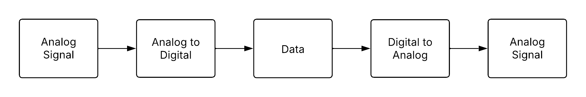
This report explores one of the most effective ADC architectures: the Sigma-Delta converter. The following sections provide a theoretical overview of ADC operation, analyze key performance characteristics at the system level, and develop foundational circuit models that replicate the desired conversion behavior. Lastly, a detailed circuit design will be presented, verified through SPICE simulations in the xschem design environment, outlining practical implementation strategies for integrated circuit fabrication.
4.1 System Overview
The measurement system under consideration for this semester’s project is a classical mixed-signal architecture designed for precise data acquisition and processing. At its core, the system utilizes an accelerometer as the primary analog sensor, responsible for capturing physical acceleration data from the environment. This analog signal is inherently continuous and requires conversion into the digital domain to enable efficient processing, analysis, and communication.
To achieve this, the analog output from the accelerometer is fed into an ADC. The ADC performs the crucial task of sampling the continuous analog signal and quantizing it into discrete digital values. These digital signals can then be processed by a microontroller, which serves as the central processing unit for the system. Within the microcontroller, further operations such as filtering, data interpretation, and wireless communication can be performed, depending on the application requirements.
For the hardware implementation of this signal chain, the following components have been selected:
ADXL335 Accelerometer
A low-power, three-axis analog output accelerometer capable of measuring acceleration with a full-scale range of ±3 g. It provides a simple and reliable analog voltage output proportional to acceleration, making it ideal for integration into the system.ADS1115 ADC
A high-precision, 16-bit analog-to-digital converter from Texas Instruments. It features a programmable gain amplifier (PGA) and an I²C-compatible interface, offering excellent resolution and flexibility for capturing low-level analog signals from the accelerometer.ESP8266 Microcontroller
A highly integrated microcontroller with built-in Wi-Fi capability. It not only handles the digital data processing but also enables wireless communication, making it suitable for IoT-based measurement applications.
This system architecture ensures a robust interface between the analog sensing domain and the digital processing domain, highlighting the importance of accurate data conversion and efficient signal processing in modern measurement systems.
The high-level architecture of the described measurement system is illustrated in Figure 4.2 below. It shows the data flow from the analog accelerometer (ADXL335), through the analog-to-digital converter (ADS1115), and finally to the digital microcontroller (ESP8266) for further processing and communication.
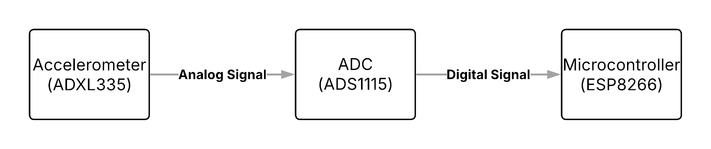
In addition to the top-level architecture, the internal structure and functionality of the individual components are shown in the following figures. These diagrams provide insight into the signal flow and the key subsystems involved in the measurement system.
4.1.1 ADXL335 Block Diagram
Figure 4.3 presents the internal block diagram of the ADXL335 accelerometer. It consists of a three-axis MEMS sensor, followed by an AC amplifier and demodulator stage. Each axis output is then buffered through separate output amplifiers, providing analog voltage signals corresponding to acceleration along the X, Y, and Z axes. These outputs are routed to external filtering components to stabilize the signal.
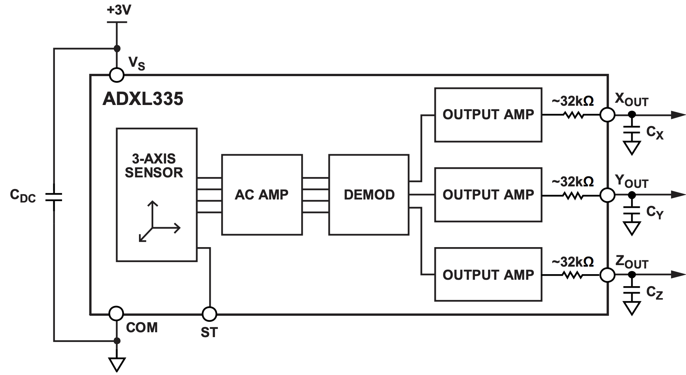
4.1.2 ADS1115 Block Diagram
Figure 4.4 illustrates the functional block diagram of the ADS1115 Analog-to-Digital Converter. The ADC features a multiplexer (MUX) that allows for the selection between multiple input channels, followed by a programmable gain amplifier (PGA). The 16-bit delta-sigma ADC performs high-resolution conversion of the input signal. An internal voltage reference, oscillator, and I²C interface facilitate accurate conversion and communication with external devices. The comparator and ALERT/RDY functionality provide additional flexibility for system integration.
4.1.3 ESP8266 Pinout Diagram
Finally, Figure 7.5 displays the ESP8266 microcontroller module pinout. This microcontroller includes GPIO pins, I²C and SPI communication interfaces, and a built-in Wi-Fi module. The diagram highlights the various available digital interfaces for connecting to peripheral devices, as well as power and ground connections necessary for integration into the system. The ESP8266 is responsible for receiving the digital data from the ADS1115 and handling subsequent processing and wireless communication.
5 Analog-to-Digital Converter
In an increasingly digitalized world, microprocessors and digital systems form the core of almost all modern control and communication systems. Whether in smartphones, industrial automation, or high-speed networks, digital processors handle central computing tasks and make real-time decisions. However, while processing occurs purely in the digital domain, the physical world remains analog. Sensors, actuators, and other external devices generate continuous analog signals that must first be converted into a discrete form for digital processing (Bajdechi 2004).
This is where mixed-signal systems come into play, bridging the gap between the analog and digital domains. As the “brain” of nearly every control and communication system, the digital processor interacts with the external world through analog-to-digital converters (ADCs) for receiving analog signals and digital-to-analog converters (DACs) for sending analog outputs (Bajdechi 2004).
As shown in Figure 5.1, the general block diagram of an ADC designed for converting analog signals consists of an anti-aliasing filter (AAF), a sampler, and a quantizer (Rosa and Río 2013).

5.1 Sampling
As shown, a set of key components is essential for converting an analog signal into a discrete-time representation. A fundamental aspect of this process is sampling, as it ensures the conversion of an analog signal into a discrete-time signal (Bajdechi 2004).
In practical applications, sampling can occur in one of three modes. If the highest frequency present in the signal is limited to \(f_{\max}\), the sampling approaches are categorized as follows (Williams and Taylor 2006):
- Critically sampled: \(f_s = 2 f_{\max},\)
- Oversampled: \(f_s > 2 f_{\max},\)
- Undersampled: \(f_s < 2 f_{\max}.\)
Critical sampling refers to setting the sampling rate to the lowest possible value that still satisfies the sampling theorem. If this condition is not met, aliasing occurs, preventing accurate reconstruction of the input signal due to overlapping frequency components. To ensure that the highest frequency of the analog signal remains below the Nyquist frequency, an analog prefilter - known as an anti-aliasing filter - is typically placed between the signal source and the ADC. A well-designed anti-aliasing filter effectively attenuates signal energy above the Nyquist frequency. In practice, the input signal is often affected by noise, which may contain frequency components outside the desired range. Therefore, it is also essential that the filter removes out-of-band noise, as it could otherwise alias into the signal band after sampling and degrade the quality of the sampled values (Pavan, Schreier, and Temes 2017). Undersampling can occur either deliberately or unintentionally. In both scenarios, the sampling rate is chosen to be lower than the Nyquist frequency. As a result, aliasing takes place (Williams and Taylor 2006).
Furthermore, it is important to note that sampling results in a periodic repetition of the spectrum. The following example illustrates this:


If the conditions of the sampling theorem are met, the input signal can be fully reconstructed by filtering with an ideal low-pass filter with a cutoff frequency \({{\omega_g}}\) and an amplitude of \({{T_a}}\) (Goldenbaum 2022):
\[ H_{AAF}(\omega) = T_a \, \operatorname{rect}(\omega / 2\omega_g). \tag{1} \]

In the frequency domain, an ideal low-pass filter with a specific cutoff frequency is used to fully reconstruct the signal. Since this corresponds to a multiplication with a rectangular function in the frequency domain, it results in a convolution with the sinc function in the time domain. The sinc interpolation is a series expansion in which the maxima of the individual sinc functions coincide with the sampled values. Each sample point is associated with a corresponding sinc function. Consequently, the original function can be reconstructed as a weighted sum of sinc functions, where each sample value corresponds to a sinc function shifted by the sampling period \(T_a\). The superposition of these sinc functions then reconstructs the original function (Meyer 2019).
5.2 Quantization
Quantization is a nonlinear, memoryless operation (Pavan, Schreier, and Temes 2017). It refers to the conversion of a continuous-valued signal into a signal with a finite set of values (Goldenbaum 2022). Unlike the sampling process, quantization is an irreversible operation, leading to a loss in the resolution of the digitized signal (Rosa 2011).
The quantization operator is typically described by a quantization characteristic:

The quantization level \(Q\) defines the respective quantization intervals. These intervals are determined by the word length \(q\) (also referred to as the bit width). The relationship is given by \(Q = 2^q\). The greater the word length, the more quantization intervals exist. This means that the quantization becomes more precise, as the difference between the actual value and the quantized value continuously decreases (Goldenbaum 2022).
The delta (\(\Delta\)) represents the accuracy and is defined as \(\Delta = 2/Q\). This implies that as \(Q\) increases, the word length \(q\) also grows, and \(\Delta\) becomes smaller. Since the step size between quantization levels decreases, the resolution improves (Goldenbaum 2022). After quantization, digital signals are generated. Each quantization interval is assigned a unique code number.
The quantization process also imposes a limitation on the performance of an ideal ADC, as an error is introduced during the conversion of the input signal from a continuous to a discrete amplitude representation. This error, commonly known as quantization error, will be discussed in more detail in a later chapter.
6 Delta-Sigma ADCs
The general block diagram of a Delta-Sigma ADC is as follows:

The topology includes an antialiasing filter, which band-limits the analog input signal to prevent aliasing during subsequent sampling. In this case, the sampling is oversampling and significantly reduces the attenuation requirements of the AAF, allowing for smoother transition bands compared to Nyquist-rate ADCs. The central block, the Delta-Sigma modulator, performs oversampling and quantization of the band-limited analog signal. The quantization noise is shaped in the frequency domain by introducing an appropriate loop filter \(H(z)\) and enclosing it within a negative feedback loop. The decimation filter applies a highly selective digital filter to sharply remove out-of-band spectral components from the delta-sigma output, effectively eliminating most of the shaped quantization noise. Additionally, the decimator reduces the data rate from \(f_s\) down to the Nyquist frequency while increasing the word length (Rosa and Río 2013).
6.1 System Outline
A \(\Delta\Sigma\) converter operates as a 1-bit sampling system, where an analog input signal is sampled multiple times through oversampling. At its core, the \(\Delta\Sigma\) modulator converts the analog signal into a high-speed, single-bit pulse stream while shaping the quantization noise. The modulator can be analyzed in both the time domain and frequency domain.

Figure 6.2 depicts the time-domain representation of the modulator. It consists of a difference amplifier, an integrator, and a comparator, with a feedback loop incorporating a 1-bit DAC.
The system continuously calculates the difference between the input signal and a feedback signal, emphasizing changes rather than absolute values. This difference signal is then integrated, influencing the output direction. When the integrator output reaches the comparator threshold, the 1-bit ADC quantizes it into a binary value. The output is fed back through a 1-bit DAC, creating a closed-loop system that shapes the noise and stabilizes the signal. The resulting pulse waveform represents the input signal, and when averaged over time, it approximates the original analog input (Baker 2011). The DAC functions as a simple switch that connects the negative input of the difference amplifier to either a positive or negative reference voltage. Its primary role is to keep the integrator’s average output near the comparator’s reference level (Maxim 2003).

Figure 6.3 shows the frequency-domain representation. In this domain, the combination of integration and oversampling functions as a noise-shaping filter, enabling high-resolution conversion by pushing noise outside the signal band. Thanks to these characteristics, \(\Delta\Sigma\) ADCs are widely used in applications requiring high accuracy, such as audio processing, sensor technology, and precision measurements .
Why is it called Delta-Sigma?
The name Delta-Sigma originates from the key mathematical operations performed in the modulator.
- Delta (Δ) represents the difference operation. The system continuously calculates the difference between the input signal and the feedback signal, ensuring that it tracks changes rather than absolute values. This differentiation process helps in shaping the quantization noise.
- Sigma (Σ) refers to accumulation (or integration). After computing the difference, the error signal is integrated over time, effectively summing past values. This process shapes the noise spectrum, reducing in-band noise while pushing most of it to higher frequencies.
Some sources use the term Sigma-Delta instead of Delta-Sigma, emphasizing the integration first. However, both terms describe the same modulation technique.
6.2 Fundamental Concepts

A \(\Delta\Sigma\) ADC leverages advanced signal processing techniques to achieve higher resolution than conventional ADCs. Oversampling increases the sampling rate beyond the Nyquist frequency, spreading quantization noise over a wider frequency range. Noise shaping further pushes this noise into higher frequencies, where it can be effectively removed by digital filtering. Finally, decimation reduces the sample rate while preserving the signal’s integrity, resulting in a high-precision digital output.
6.3 Oversampling
If an ADC operates faster than \(2f_{\text{max}}\), it is considered an oversampled ADC. In this case, the oversampling ratio (OSR) is a design parameter that indicates how many times \(f_s\) is larger than the minimal value required by the Nyquist theorem.
\[ OSR = \frac{f_s}{2 f_{\text{max}}}, \tag{2} \]
where \(f_{\text{max}}\) is the maximum signal frequency, which is the signal bandwidth (Pavan, Schreier, and Temes 2017).
Oversampled ADCs impose significantly less stringent requirements on the filter compared to Nyquist rate converters, as the signal is sampled at a frequency that far exceeds its bandwidth (Boser and Wooley 1988). One advantage of oversampling ADCs is that they simplify the requirements for the AAF, as can be seen in Figure 6.5. It is important to note that the AAF for a Nyquist converter must have a sharp transition band, which often results in phase distortion for signal components near the cut-off frequency (Rosa 2011), as can be seen in Figure 5.4.

However, oversampling has another effect that must be considered: noise. This phenomenon, known as quantization noise, arises for the following reason: while the ADC input is a continuous signal with an infinite range of possible values, the digital output is discrete, with the number of distinct states determined by the converter’s resolution. As a result, the analog-to-digital conversion process inevitably discards some information, introducing a certain degree of distortion into the signal. The associated error varies randomly, with a magnitude of up to ±1 LSB (Clifford 2016). Figure 6.9 shows the signal with quantization noise:

In practice, an ideal quantizer is often described using a linear model, provided that certain assumptions about the statistical properties of the quantization error hold. The quantization error \(e(n)\) is directly dependent on the quantizer input signal \(q(n)\), as shown in Figure 6.7.

If \(q(n)\) is considered to vary randomly from sample to sample within the interval \([-\Delta/2, +\Delta/2]\), the quantization error \(e(n)\) will also be uncorrelated between successive samples. Under these assumptions, the quantization error can be represented as a random process following a uniform probability distribution within the range \([-\Delta/2, +\Delta/2]\), as shown in Figure 6.8.

As can be seen, quantization noise exhibits characteristics similar to white noise in the frequency domain, maintaining a constant power spectral density across the entire frequency range. The power associated with the quantization error can thus be computed as (Rosa and Río 2013):
\[ \overline{e^2} = \sigma_e^2 = \int_{-\infty}^{\infty} e^2 \, \text{PDF}(e) \, de = \frac{1}{\Delta} \int_{-\Delta/2}^{+\Delta/2} e^2 \, de = \frac{\Delta^2}{12}. \tag{3} \]
The former assumption implies that the power of the quantization error will also be uniformly distributed in the range \([-f_s/2, +f_s/2]\), yielding (Rosa and Río 2013):
\[ \overline{e^2} = \int_{-\infty}^{\infty} S_E(f) \, df = S_E \int_{-f_s/2}^{+f_s/2} df = \frac{\Delta^2}{12}, \tag{4} \]
so that the PSD of the quantization error in this range is:
\[ S_E = \frac{\overline{e^2}}{f_s} = \frac{\Delta^2}{12 f_s}.\tag{5} \]
These assumptions are referred to as the additive white noise approximation of the quantization error. They allow a quantizer, which is inherently deterministic and nonlinear, to be represented using a random linear model. This model is expressed as (Rosa and Río 2013):
\[ y(n) = k_q(n) + e(n) \tag{6} , \]
where \(e(n)\) represents the quantization noise.
Using this approximation of quantization error as white noise, the performance of ideal ADCs can be easily evaluated. In a Nyquist ADC, where \(f_s = 2 f_{\text{max}}\), all the quantization noise power remains within the signal band and appears at the ADC output as part of the input signal itself, as illustrated in Figure 6.9.
Conversely, if an oversampled signal is quantized, only a fraction of the total quantization noise power lies within the signal band, as illustrated in Figure 6.9:

While the SNR remains unchanged, the noise energy is now distributed across a broader frequency range (Maxim 2003). The in-band noise power (IBN) caused by the quantization process in an ideal oversampling ADC is thus (Pavan, Schreier, and Temes 2017):
\[ \text{IBN} = \int_{-f_{\text{max}}}^{+f_{\text{max}}} S_E(f) \, df = \int_{-f_{\text{max}}}^{+f_{\text{max}}} \frac{\Delta^2}{12 f_s} \, df = \frac{\Delta^2}{12 \text{OSR}} \tag{7}, \] where \(S_E(f)\) is the quantization error power spectral density, \(\Delta\) is the quantization resolution, \(f_s\) is the sampling frequency, and OSR represents the oversampling ratio (Pavan, Schreier, and Temes 2017).
Note that the SNR for a 1-bit ADC is 7.78 dB (6.02 + 1.76). Each factor-of-4 oversampling increases the SNR by 6 dB, and every 6 dB increase corresponds to gaining one additional bit of resolution. A 1-bit ADC with 24× oversampling can achieve a resolution of four bits. However, achieving 14-bit resolution would require oversampling by a factor of \(4^{15}\), which is impractical (Maxim 2003).
\(\Delta\Sigma\) converters address this limitation through noise shaping, a technique that enables a gain of more than 6 dB per factor-of-4 oversampling (Maxim 2003).
6.4 Noise shaping
To further improve the conversion resolution at the same sampling frequency \(f_s\) and with the same number of ADC bits, noise shaping can be applied. This is accomplished by high-pass filtering the quantization noise to displace most of its power from low frequencies, where the input signal spectrum resides, to higher frequencies near \(f_s/2\) (Bajdechi 2004), ensuring that most of its power is moved outside the signal band (Rosa and Río 2013).
To understand noise shaping, the system can be analyzed from different perspectives. Starting with Figure 6.2, the 1-bit DAC in the feedback loop can be observed. The primary role of the feedback DAC is to keep the integrator’s average output near the comparator’s reference level. The density of ones at the modulator output is proportional to the input signal. As the input increases, the comparator generates a higher number of ones, and conversely, for a decreasing input, fewer ones are produced. By summing the error voltage, the integrator acts as a low-pass filter for the input signal and a high-pass filter for the quantization noise. As a result, most of the quantization noise is shifted to higher frequencies (Maxim 2003).
Another way to analyze the system, especially with regard to noise shaping, is by using linear models.
6.4.1 Linear Model
Figure 6.10 illustrates an idealized linear model of a delta-sigma modulator, represented as a negative feedback system. \(x\) represents the discrete-time input signal to the system, \(y\) is the system’s output signal and \(k_q\) refers to the gain factor of the quantization error and can be chosen arbitrarily in the case of a 1-bit quantizer. The model aims to improve the understanding that the goal is to have a frequency-dependent gain. This gain should be infinite at low frequencies so that the noise transfer function (NTF) has a small magnitude at low frequencies. The lowest-order system with these characteristics is an integrator. \(\frac{1}{1 - z^{-1}}\) represents the discrete-time integrator. It accumulates the error signal over time and is a key element in shaping the noise spectrum. \(z^{-1}\) is a unit delay element, which models the feedback delay in the loop (Pavan, Schreier, and Temes 2017).

At the heart of the model is the loop filter, a fundamental component that shapes the spectral characteristics of the quantization noise. Functionally, it acts as a discrete-time integrator, enabling past sample values to influence the current output. This feedback mechanism is essential for achieving noise shaping, as it suppresses in-band noise while pushing the quantization error toward higher frequencies, where it can be more easily filtered.
The following equation shows the relationship between the system’s input, quantization error, and output:
\[ Y(z) = z^{-1} X(z) + (1 - z^{-1}) E(z).\tag{8} \]
It illustrates that the output \(Y(z)\) consists of the delayed input signal \(X(z)\) and the shaped quantization error. Here, \(z^{-1}\) represents the signal transfer function (STF), while the noise transfer function (NTF), \((1 - z^{-1})\), exhibits a first-order high-pass characteristic with a transmission zero at DC (\(\omega = 0\), i.e., \(z = e^{j\omega} = 1\)), since \(1 - e^{-j0} = 0\).
The logarithmic plot of the magnitude response of the NTF in log scale shows the first-order nature of the high-pass response, increasing at a rate of 20 dB per decade (Pavan, Schreier, and Temes 2017).
The in-band noise power decreases proportionally to \(OSR^{-3}\).
\[ \text{IBN} = \frac{\Delta^2}{24\pi} \int_{-\frac{\pi}{OSR}}^{\frac{\pi}{OSR}} |(1 - e^{-j\omega})|^2 d\omega = \frac{\Delta^2}{12\pi} \int_{0}^{\frac{\pi}{OSR}} 4 \sin^2\left(\frac{\omega}{2}\right) d\omega \]
\[ \approx \frac{\Delta^2}{12\pi} \int_{0}^{\frac{\pi}{OSR}} \omega^2 d\omega = \frac{\Delta^2}{36\pi} \frac{\pi^3}{OSR^3}. \]
When the oversampling ratio is doubled, the in-band noise power reduces by 9 dB, which results in an effective resolution improvement of 1.5 bits. In contrast, basic oversampling without noise shaping only increases resolution by 0.5 bits for each doubling of the OSR. In principle, achieving high accuracy is possible by selecting a sufficiently large \(OSR\). However, combining oversampling with noise shaping significantly reduces the required OSR value.
6.5 Second-Order Delta-Sigma Modulation
Following oversampling and noise shaping, the question arises as to how quantization noise can be further reduced. A modulator that integrates the input signal twice instead of just once is an effective way for that. Figure 6.11 illustrates a 1-bit, second-order modulator that uses two integrators instead of one. In this case, the noise term depends not only on the previous error but also on the two preceding errors.

Increasing the resolution and the effective number of bits (ENOB) in a \(\Delta\Sigma\) modulator can be achieved by incorporating an additional integrator and feedback path. A linearized analysis in this scenario leads to the expression:
\[ Y(z) = z^{-1} X(z) + (1 - z^{-1})^2E(z). \tag{9} \]
This shows that the NTF takes the form \((1 - z^{-1})^2\) in the z-domain, applying a shaping function of \((2 \sin(\omega/2))^4\) to the PSD. As a result, doubling the OSR leads to an increase of approximately 2.5 bits in resolution. This represents a significantly better trade-off compared to a first-order modulator.
By incorporating more integrators and feedback branches within the loop, it is possible to achieve higher-order noise transfer functions. In the case of an L-th order loop filter, the NTF follows the form:
\[ NTF(z) = (1 - z^{-1})^L. \tag{10} \]
Under these conditions, the in-band noise power is given by:
\[ IBN = \frac{\pi^{2L} e^2_{rms}}{(2L + 1) OSR^{2L+1}}. \tag{11} \]
The Trade-Offs of High-Order \(\Delta\Sigma\) Modulators
The previous discussion suggests that a \(\Delta\Sigma\) loop with a carefully chosen, very high-order NTF could, in theory, achieve exceptionally high performance. However, if something sounds too good to be true, it probably is. In practice, high-order loops introduce stability challenges. These limitations reduce the achievable resolution to a lower value than the theoretical predictions.
Moreover, second- and higher-order modulators come with additional drawbacks, including increased complexity, multiple feedback loops, and greater design difficulty.
6.6 Decimation
After the \(\Delta\Sigma\) modulator, the decimator follows, which is shown as the final stage in Figure 6.1. The undesirable characteristics of the modulator output include high-frequency noise and a high-speed, 1-bit output rate. Once the signal is in the digital domain, a low-pass digital filter can be applied to attenuate the high-frequency noise, while a down-sampler can be used to reduce the output data rate (Baker 2011).
A down-sampler with a downsampling factor \(M\), where \(M\) is a positive integer, produces an output sequence with a sampling rate that is \({1}/{M}\) of the input sequence’s sampling rate. It retains every \(M\)-th sample of the input sequence and discards the \(M - 1\) intermediate samples to generate the output. By removing samples, down-sampling increases the sampling period. If the input sampling rate is defined as \(F_T = {1}/{T}\), then the output sampling rate \(F_M\) is related to \(F_T\) as follows (Wolter 2023):
\[ F_M = \frac{1}{T_M} = \frac{1}{M T} = \frac{F_T}{M}. \tag{12} \]
This means that after down-sampling, the new sampling frequency is a fraction of the original rate. It is also important to examine the frequency-domain relation of a down-sampler. The relationship between input and output in the z-transform domain can be analyzed by the following relation:
\[ Y(z) = \frac{1}{M} \sum_{k=0}^{M-1} X\left(z^{1/M} W_M^k\right). \tag{13} \]
This equation shows that the output spectrum consists of a sum of \(M\) stretched and shifted copies of the input spectrum, scaled by a factor of \(1/M\).
The output spectrum of a down-sampler with a factor of \(M\) is given by:
\[ Y(e^{j\omega}) = \frac{1}{M} \sum_{k=0}^{M-1} X\left(e^{j(\omega - 2\pi k)/M}\right). \tag{14} \]
Aliasing in \(Y(e^{j\omega})\) is completely avoided if and only if:
\[ X(e^{j\omega}) = 0 \quad \text{for} \quad {\pi}/{M} \leq |\omega| \leq \pi . \tag{15} \]
This means that \(x[n]\) must be band-limited to \(\pm \pi / M\) (Wolter 2023).
In multistage signal processing systems, the order of downsampling and filtering can be interchanged under certain conditions. This is particularly useful as it allows for computational efficiency in systems with variable sampling rates. A signal \(x[n]\) is first downsampled by a factor of \(M\) and then processed by the filter \(H(z)\):

The corresponding representation in the Z-domain is:
\[ Y_1(z) = H(z) \frac{1}{M} \sum_{k=0}^{M-1} X\left(z^{1/M} W_M^k\right). \]
The order of filtering and downsampling can be interchanged if the original filter \(H(z)\) is replaced with \(H(z^M)\):

This equivalence allows for flexibility in system design.
The down-sampler retains only every \(M\)-th sample. Consequently, it is sufficient to compute only for values that are multiples of \(M\), while skipping the computations of the intermediate samples. This results in a computational complexity reduction by a factor of \(M\). The decimation filter can be implemented as either an FIR or an IIR filter. Since the output is being downsampled, it is sufficient to compute only for values of \(n\) that are integer multiples of \(M\). However, the feedback signal must still be computed for all values of \(n\). As a result, in such cases, the computational savings are always less than \(M\). Therefore, FIR filters are often preferred in multirate systems due to their advantages in stability and implementation efficiency.
6.6.1 Two-Stage Decimator Structure
As previously mentioned, interchanging the positions of individual branches in such a cascade can often lead to a more computationally efficient implementation. The basic building blocks for altering the sampling rate only allow for an integer factor change in the sampling rate of a signal. To achieve a fractional (rational) change in the sampling rate, a cascade consisting of a downsampler with factor \(M\) and an upsampler with factor \(L\) must be used. These rules allow us to reposition the fundamental sampling rate conversion devices within multirate networks to more favorable locations. They prove to be extremely useful in the design and analysis of more complex systems (Mitra 2001).
For the decimation filter the computational savings can be achieved, especially with FIR filters. With IIR filters, the simplification is only partially applicable. While only every \(M\)-th output is used, the internal recursive nature of the filter requires the computation of all intermediate values. This limits the potential efficiency gain. However, IIR filters can still be more efficient overall due to their typically lower required filter order compared to FIR filters.
The following example is intended to demonstrate how to design a decimator for specific specifications. It is important to understand the concept behind systems engineering, so that the decimator can be implemented for different parameter values as well. In this case, a decimator is designed for the system in order to reduce the sampling rate of the signal from 220 kHz to 430 Hz. The specifications are assumed to be as follows:
| Specification | Value |
|---|---|
| Sampling Rate (\(f_s\)) | 220 kHz |
| Output Sampling Rate (\(f_d\)) | 430 Hz |
| Passband Edge (\(f_p\)) | 215 Hz |
| Stopband Edge (\(f_{sb}\)) | 250 Hz |
| Passband Ripple (\(\delta_p\)) | 0.002 |
| Stopband Ripple (\(\delta_s\)) | 0.001 |
| OSR | 512 |
The desired decimator with a down-sampling factor \(M\) = 512 is shown below.

Since the signal of interest occupies the range \([-\pi/\text{OSR}, \pi/\text{OSR}]\), it can be down-sampled by a factor of OSR without introducing aliasing. This results in a sequence that is sampled at the Nyquist rate (Pavan, Schreier, and Temes 2017), where the output sampling frequency is \(f_s = 2 \cdot f_{\text{sig,max}} = 430\,\text{Hz}\).
The meaningful variables in this overall system are the modulator’s sampling rate \(f_s\) and the digital/decimation filter’s output-data rate \(f_d\). The ratio between these two variables is defined as the decimation ratio (DR). In this example, the decimation ratio (DR) is 512, which is the result of dividing the modulator’s sampling rate of 220 kHz by the output data rate of 430 Hz. A high DR reduces quantization noise and results in a higher effective number of bits (ENOB), whereas a low DR leads to increased noise and lower ENOB.
The filter order \(N\) (i.e., length \(N+1\)) must first be estimated. The required order \(N\) can be calculated using the following equation:
\[ N = \frac{-20 \log_{10} \left( \sqrt{\delta_p \delta_s} \right) - 13}{14.6 \Delta f} \tag{16}, \]
where \(\Delta f = (f_{sb} - f_p) / f_s\) is the normalized transition bandwidth. Alternatively, the filter order of \(H(z)\) can also be estimated using the firpmord function. For these specifications, the filter order is \(N = 19138\). Thus, the number of multiplications per second required for the decimation filter is given by:
\[ R_{M,H} = 19138 \cdot 430 = 8{,}229{,}340\ \text{mult/sec.} \]
The obvious problem with this approach is that it is extremely computationally intensive and therefore highly inefficient. It would lead to high power consumption, which is particularly disadvantageous for embedded systems, as well as increased resource usage in general. For this reason, a step-by-step design of a two-stage decimator is considered. First, the decimation filter \(H(z)\) is implemented using an IFIR filter. The decimation factor \(M\) is factorized as \(512 = 256 \cdot 2\), allowing the interpolation factor \(L\) for \(F(z^L)\) to be chosen as \(L = 256\). By exploiting the multirate identity, the final two-stage decimator design is derived.
The overall ripple of the filter cascade is given by the sum of the two passband ripples. This can be compensated by designing \(G(z)\) and \(F(z)\) such that each has an equal passband ripple of \(\delta_p = 0.001\) (rather than 0.002). The cascade of \(G(z)\) and \(F(z)\) achieves a stopband performance at least as good as either \(F(z)\) or \(G(z)\) individually. Therefore, a stopband ripple of \(\delta_s = 0.001\) can be selected for both filters. This corresponds to the specifications of \(H(z)\) stretched by a factor of \(L = 256\).
As a result, the filter \(F(z)\) has:
\[ f_p = 256 \cdot 215\ \text{Hz} = 55{,}040\ \text{Hz}, \]
\[ f_{sb} = 256 \cdot 250\ \text{Hz} = 64{,}000\ \text{Hz}. \]
For the stopband edge of \(G(z)\):
\[ f_s / 256 - f_{sb} = \left({220,000}/{256} - 250\right)\ \text{Hz} = 609\ \text{Hz}. \]
The frequency specifications of \(F(z)\) and \(G(z)\) are summarized as follows:
- \(F(z):\ f_p = 55.04\ \text{kHz},\ f_{sb} = 64\ \text{kHz},\)
- \(G(z):\ f_p = 215\ \text{Hz},\ f_{sb} = 609\ \text{Hz}.\)
The filter orders of \(F(z)\) and \(G(z)\) estimated using the firpmord function are \(N_F = 80\) and \(N_G = 1818\).
The implementation of \(F(z)\) followed by a factor-of-2 down-sampler requires:
\[ R_{M,F} = 80 \cdot 430 = 34{,}400\ \text{mult/sec}. \]
The implementation of \(G(z)\) followed by a factor-of-256 down-sampler requires:
\[ R_{M,G} = 1818 \cdot 860 = 1{,}563{,}480\ \text{mult/sec}. \]
Therefore, the savings compared to the single-filter design are approximately 81%.
Below is an illustration summarizing the steps in the two-stage realization of the decimator structure.

7 Implementation and Analysis of Behavior with MATLAB and Simulink
To start with the system design and the analyze of the behaviour the following block diagram in Figure 7.1 is shown. The modulator topology is a standard CIFB (cascade of integrators, feedback) structure (Schreier, Temes, et al. 2005).
In this model, the parameters are defined as follows:
| Specification | Value |
|---|---|
| System Order (L) | 2 |
| Modulator Topology (form) | CIFB |
| Optimization (opt) | 0 |
| Quantizer Levels (nLev) | 2 (1‑Bit) |
| Sampling Frequency (\(\text{f}_s\)) | 220 kHz |
| Sampling Time (\(\text{T}_s\)) | \(1 / \text{f}_s\) |
| Oversampling Ratio (OSR, M) | 512 |
| Simulation Length (N) | \(16 \times M = 8192\) |
| Bandwidth (\(\text{f}_B\)) | \(\text{f}_s / (2 \times M) \approx 215\) Hz |
| Sinus Test Cycles | 9 |
| Sinus Frequency (\(\text{f}_x\)) | \(cycles \times \text{f}_s / N\) |
| Test Signal Amplitude (A) | 0.8 |
| Time Vector (t) | \(\text{T}_s \times [0:N-1]\) |
| Input Signal (u) | \(A \cdot \sin(2\pi \cdot \text{f}_x / \text{f}_s \cdot [0:N-1])\) |
In this model, the parameter L is set to 2, indicating that the DSM is of second order. The topology is defined by form = ‘CIFB’, which specifies the Cascade of Integrator Feedback configuration — a standard structure for delta-sigma designs. The parameters \(f_s\) and \(T_s\) denote the sampling frequency and sampling period, respectively. The oversampling ratio is determined by \(M\) = 512, while the simulation length — and consequently the number of FFT points — is set by \(N = 16 \cdot M\). Finally, \(u\) represents the sinusoidal input signal for the modulator.
%% Design NTF
H = synthesizeNTF(L, M, opt, 2);
[a, g, b, c] = realizeNTF(H, form);
b(2:end) = 0;
ABCD = stuffABCD(a, g, b, c, form);
[ABCDs, umax] = scaleABCD(ABCD);
[a, g, b, c] = mapABCD(ABCDs, form);One of the most important sections of code is shown above. SynthesizeNTF(L, M, opt, 2) designs the noise-transfer function polynomial based on the modulator order L, the oversampling ratio M, and additional parameters. The function realizeNTF(H, form) generates specific coefficients (a, g, b, c) for the chosen topology (CIFB). The operation b(2:end) = 0 sets certain feedback paths to zero, often for simplification or demonstration purposes. Subsequently, the functions stuffABCD(…), scaleABCD(…), and mapABCD(…) transform and scale the state-space representation of the modulator (the ABCD matrix) to achieve a more favorable implementation, such as reducing the signal levels in the integrators. In this case, the Noise Transfer Function is given by:
\[ H(z) = \frac{(z - 1)^2}{z^2 - 0.7639z + 0.2361} \tag{17} \]
The result of the modulator can be seen in Figure 7.2. The simulation result is as expected. The modulator converts the analog input signal into a high-speed, single-bit, pulse-width modulated waveform. However, the modulator output has certain drawbacks, including high-frequency noise and a fast 1-bit output rate. Once the signal is in the digital domain, a low-pass digital filter can be applied to reduce high-frequency noise, while a decimation filter can be used to decrease the output data rate. When the input signal reaches its peak amplitude, the PWM output consists of densely packed high pulses, corresponding to a high duty cycle. Conversely, when the input signal has a lower amplitude, the density of high pulses decreases, resulting in a lower duty cycle. This time-domain pulse-density modulation effectively represents the amplitude of the analog signal and enables accurate reconstruction after digital filtering and decimation.
Applications of PWM Signals
In delta-sigma ADCs, the PWM output is filtered and decimated; however, it is important to mention that PWM is also widely used in various applications due to its efficiency in controlling power and transmitting signals. In audio applications, PWM is employed in Class-D amplifiers, where the modulated signal directly drives the speaker. It is also utilized in digital-to-analog conversion, particularly in pulse-density modulation (PDM)-based systems like DSD (Direct Stream Digital) audio. Furthermore, PWM plays a crucial role in motor control and power regulation, enabling precise adjustments in speed and energy efficiency.

Figure 7.3 shows a comparison between 1st, 2nd, and 3rd order delta-sigma modulators in the frequency domain. It is clearly visible that higher-order modulators provide stronger attenuation of quantization noise in the low-frequency (baseband) region. The 3rd order modulator is the most effective in suppressing noise within the signal band. However, the noise level increases at higher frequencies as the modulator order increases.
8 Switched Capacitor
Switched capacitor (SC) circuits play a fundamental role in modern mixed-signal systems, particularly in the implementation of high-performance ADCs. By replacing traditional resistors with switches and capacitors, SC circuits offer precise and controllable analog signal processing using standard CMOS technology. This makes them highly suitable for integration in low-power, high-accuracy applications.
The core principle of a switched capacitor circuit is based on the controlled transfer of charge between capacitors through electronic switches. These switches are typically driven by non-overlapping clock phases that define the sampling (track) and holding intervals. During the track phase, the switch closes, allowing the capacitor to sample and store the input voltage. Once the switch opens (hold phase), the stored charge represents the sampled value, which can then be processed or transferred further along the signal chain. This sample-and-hold functionality is a critical building block for discrete-time signal processing.
In essence, switched capacitor circuits emulate the behavior of resistors by controlling the rate at which charge is moved between nodes. The equivalent resistance is determined by the capacitance value and the switching frequency. As a result, SC circuits provide highly accurate and stable performance that is less sensitive to process variations, temperature, and voltage changes compared to traditional resistor-based circuits.
Switched capacitor techniques are widely employed in integrators, filters, and analog-to-digital conversion stages, such as the integrator loops of Sigma-Delta ADCs. These circuits benefit from their compatibility with digital control logic, making them an essential component in modern integrated circuit design.
8.1 Clock Phases in Switched Capacitor Circuits
Switched capacitor circuits rely heavily on precise timing signals to control the switching events. Typically, two non-overlapping clock signals, denoted as Φ₁ and Φ₂, are used to drive the switches. These two clock phases ensure that switches are never simultaneously closed, which would otherwise create short circuits and result in charge sharing errors.
8.1.1 Non-overlapping Clock Phases
In Figure 8.1, the basic waveforms of Φ₁ and Φ₂ are shown. Φ₁ is high during one period while Φ₂ remains low. After Φ₁ transitions to low, Φ₂ becomes high. This non-overlapping behavior is essential for reliable charge transfer in switched capacitor circuits.
These clock phases alternate, controlling the sampling and transfer of charge between nodes. The duration of the clock period and its frequency directly affect the equivalent resistance of the switched capacitor circuit. Specifically, the equivalent resistance R_eq can be described as:
\[ R_{eq} = \frac{1}{f \cdot C} \tag{18} \]
Where f is the clock frequency, and C is the value of the switched capacitor.
8.2 Timing Diagrams for Switched Capacitor Operation
Understanding the timing behavior of Φ₁ and Φ₂ in different clocking schemes is essential for accurate circuit operation. In Figure 8.2, we see an extended timing diagram of Φ₁ and Φ₂ that emphasizes their non-overlapping nature over multiple cycles.
This timing control prevents both switches from conducting at the same time, thereby avoiding charge injection errors and signal corruption. Such precision in clock phase control is a defining feature of CMOS-based SC implementations.
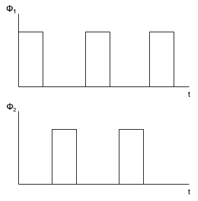
The rise and fall times, as well as the phase separation, are carefully designed in modern integrated circuits to minimize clock feedthrough and other non-ideal effects.
8.3 Basic Switched Capacitor Circuit Operation
The simplest switched capacitor circuit, as shown in Figure 3, consists of two switches and one capacitor. This configuration serves as a charge pump, moving charge from an input node to an output node in discrete time intervals controlled by the clock phases Φ₁ and Φ₂.
8.3.1 Operating Principle
- During Φ₁, switch S₁ is closed, allowing the capacitor C₁ to charge up to the input voltage V₁.
- During Φ₂, switch S₁ opens and switch S₂ closes, transferring the stored charge from the capacitor to the output node V₂.
This charge transfer process effectively samples the input signal and transfers its equivalent charge to the next stage. The circuit emulates the behavior of a resistor by relating the transferred charge to the voltage difference and the switching frequency.
The operation of this circuit can be explained using charge conservation:
\[ Q = C \cdot V \tag{19} \]
The charge transferred per cycle depends on the input voltage and the capacitance, while the average current is given by:
\[ I_{avg} = \frac{Q}{T} = C \cdot V \cdot f \tag{20} \]
This explains how the circuit behaves like a resistor with resistance 1 / (C · f).
By employing non-overlapping clock signals and discrete charge sampling, SC circuits successfully replicate the behavior of passive resistor networks in integrated circuits.
Such designs form the foundation of analog filters, integrators, and ADC building blocks, especially in Sigma-Delta modulation schemes. Understanding these fundamentals allows for the design and implementation of low-power, high-precision, and scalable analog signal processing systems.
8.4 Area Efficiency and Frequency Control in Switched Capacitor Circuits
One of the main challenges is implementing large and accurate resistances without consuming excessive silicon area. Unlike continuous-time RC filters, which require physically large resistors to achieve low-frequency operation, switched capacitor circuits can emulate resistances through controlled charge transfer, depending only on the clock frequency and the capacitor value. This technique allows designers to achieve high accuracy and area efficiency.
The schematic shown in Figure 8.4 illustrates a basic switched capacitor structure controlled by non-overlapping clock phases Φ₁ and Φ₂. During Φ₁, the capacitor is connected to the input, allowing it to charge. During Φ₂, the charge is transferred to the output. This operation is equivalent to moving discrete packets of charge, simulating the current that would flow through a resistor.
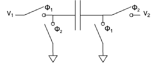
One of the most valuable properties of switched capacitor circuits is that their equivalent resistance is defined by:
\[ R_{eq} = \frac{1}{C \cdot f} \tag{21} \]
Where C is the capacitance and f is the switching frequency. This makes the resistance predictable and easily tunable by simply adjusting the clock frequency, without relying on process-sensitive resistor fabrication.
The area savings come from the fact that capacitors generally occupy less silicon area than high-value resistors. Additionally, the matching between capacitors is typically better than the matching between resistors, resulting in more stable and accurate circuit behavior. These advantages make switched capacitor circuits ideal for applications such as integrators in Sigma-Delta ADCs, switched capacitor filters, and precision analog signal processing.
Finally, because the resistance value depends entirely on the switching frequency and capacitance, designers can dynamically modify a filter’s frequency response by changing the clock rate, providing additional flexibility in system design.
9 LTSpice Simulation of an Idealized Second-Order Sigma-Delta Modulator
In this section, the behavior of an idealized second-order Sigma-Delta (ΔΣ) modulator is demonstrated using an LTSpice simulation. The purpose of this simulation is to validate the fundamental operation of the switched capacitor stages and integrator loops prior to implementing a more realistic circuit.
The model consists of two cascaded switched capacitor integrator stages, followed by a comparator and a digital feedback path. The switched capacitor stages are configured to emulate integrators, where the charge transfer mechanism accurately models the behavior of continuous-time integrators in a discrete-time domain.
The schematic shown in Figure 9.1 represents the complete simulation setup implemented in LTSpice. The primary blocks in this design are: - Switched Capacitor Integrators: Each integrator is implemented using an ideal operational amplifier model and switched capacitors that mimic charge transfer. The capacitors Cs1/Ci1 and Cs2/Ci2 define the integrator characteristics and influence the loop filter coefficients. - Clock Phases (Φ₁ and Φ₂): Two non-overlapping clock signals control the timing of the switches. These clock signals are generated by voltage sources modeled as pulse generators in LTSpice, ensuring the correct timing and preventing overlap, which is critical to avoid signal corruption. - Comparator: An ideal comparator converts the analog output of the second integrator stage into a digital logic level. - Feedback Path: The output of the comparator is fed back into the modulator, closing the loop. The feedback ensures stability and noise shaping, both characteristic behaviors of ΣΔ modulators. - D Flip-Flop: The comparator output passes through a D Flip-Flop to synchronize the output with the system clock, ensuring stable digital outputs.
9.1 Key Components and Operation
Clock Phase Control: The simulation uses ideal switches controlled by two non-overlapping clock phases Φ₁ and Φ₂ at a frequency of 220 kHz. These clocks are modeled with pulse generators and are configured to ensure there is no overlap. This guarantees that charge transfer occurs without any unintended charge sharing or signal corruption.
Switched Capacitor Stages: Each switched capacitor stage consists of: - Sampling capacitors Cs1 and Cs2. - Integration capacitors Ci1 and Ci2. - A set of four switches per stage that perform the sampling and integration steps.
The switched capacitor integrators convert the input voltage signal into a charge packet transferred at each clock cycle. This process allows the integrator stages to perform accurate discrete-time integration, critical for the loop filter performance in a ΣΔ modulator.
Operational Amplifiers: The integrators are idealized as operational transconductance amplifiers (OTAs), realized in LTSpice as voltage-controlled current sources. In the ideal model, the OTA provides a linear response across the full input range. In practical designs, care must be taken to ensure that the OTA does not enter saturation, which would otherwise violate the assumptions made in this idealized simulation.
Comparator and Feedback: The second integrator’s output is connected to an ideal comparator. Its digital output is fed back through the feedback path to both integrator stages. This feedback enforces the quantization noise shaping inherent to ΣΔ modulators.
Simulation Setup: The simulation parameters include: - Power supply voltage VDD = 1.5 V - Common-mode voltage VCM = 0.75 V - Input signal: A sine wave with an amplitude of 0.5 V centered at VCM - Capacitor values: - Cs1 = 1 pF, Ci1 = 6 pF - Cs2 = 1 pF, Ci2 = 3 pF
The transient simulation runs for 30 ms, capturing all relevant node voltages such as vx1, vx2, vq, and vd.
This LTSpice simulation demonstrates the core functionality of an idealized second-order Sigma-Delta modulator, including: - Precise clock phase control to prevent signal corruption. - Switched capacitor integrator stages emulating discrete-time integration. - Quantization feedback ensuring noise shaping and high-resolution analog-to-digital conversion.
This model serves as a foundation for developing more realistic circuits, where non-idealities such as switch resistance, parasitic capacitance, and finite OTA gain are considered.
9.2 Output Signals of the First and Second Integrator Stages
Following the LTSpice simulation of the idealized second-order Sigma-Delta modulator, the voltage outputs of the first and second integrator stages were analyzed. These signals provide crucial insight into the operation and dynamic behavior of the modulator’s loop filter.
The voltage waveform V(vx1) represents the output of the first integrator, while V(vx2) corresponds to the output of the second integrator. Both signals are critical in understanding the internal signal processing and how the modulator shapes the quantization noise.
9.2.1 Integrator 1 Output - V(vx1)
The output of the first integrator, V(vx1), shows the integration of the input signal combined with the feedback from the quantizer. The integrator accumulates charge, resulting in a signal that closely follows the low-frequency components of the input while reacting to the feedback signal to suppress quantization noise within the signal band.
The waveform of V(vx1) demonstrates: - A smoother signal profile compared to the input, due to its integration function. - Oscillations introduced by the feedback loop as the system attempts to keep the quantization error shaped and controlled.
9.2.2 Integrator 2 Output - V(vx2)
The output of the second integrator, V(vx2), exhibits an even higher degree of integration. It represents the second accumulation in the cascade, further enhancing the low-pass filtering effect of the loop filter. This output typically shows: - A stronger suppression of high-frequency components. - More pronounced signal swings, as the second integrator amplifies the difference between the first integrator’s output and the feedback signal from the comparator.
The dynamic range of V(vx2) is larger than that of V(vx1), illustrating the additional integration stage’s impact. The output of the second integrator directly feeds into the quantizer (comparator), making its behavior essential to achieving the desired noise shaping properties.
9.2.3 Output Waveforms Visualization
The time-domain waveforms for both integrator outputs are shown in Figure 9.2 below. The x-axis represents the simulation time (0 ms to 30 ms), while the y-axis represents the output voltages of the two integrators. The distinct differences in the signal shapes illustrate the successive integration performed by each stage.
The key observations from these output signals are: - The first integrator output V(vx1) follows the integrated input and feedback signals, acting as the first stage of the loop filter.
The second integrator output V(vx2) provides a deeper integration, smoothing out the signal further and preparing it for quantization.
Both outputs confirm the correct operation of the switched capacitor integrator stages and validate the simulation model.
The correct functioning of these integrators is fundamental to ensuring the modulator shapes quantization noise effectively. In a practical implementation, the design of these integrators would have to consider non-idealities such as finite OTA gain, thermal noise, and parasitic capacitances. However, for this idealized simulation, the results closely match the expected theoretical behavior.
9.3 LTspice OTA representation
In modern analog and mixed-signal circuit design, the OTA plays a critical role, particularly in switched-capacitor integrators and analog filters. Unlike traditional opamps, which act as voltage-controlled voltage sources, OTAs behave as voltage-controlled current sources. The key advantage of an OTA lies in its ability to directly control the output current by varying the input differential voltage, making it well-suited for fully integrated implementations.
An OTA can be modeled in several ways depending on the design stage. Below, we present both a simplified behavioral model used for system-level simulations in LTSpice, and a transistor-level implementation suitable for IC design.
9.3.1 Behavioral Model of the OTA in LTSpice
For early-stage system verification and discrete-time simulations, a simplified behavioral representation of the OTA can be implemented in LTSpice. This model typically consists of a Voltage-Controlled Current Source (VCCS) combined with an output resistor. The VCCS outputs a current proportional to the difference between the two input voltages (\(V_{in+} - V_{in-}\)), while the resistor converts the current into an output voltage.
In this model, the OTA is assumed to operate in its linear region, ensuring that the output current is linearly dependent on the input differential voltage. This linear model is valid as long as the input signal remains within the OTA’s linear input range. If the OTA is driven into saturation, this behavioral model no longer accurately describes its performance.
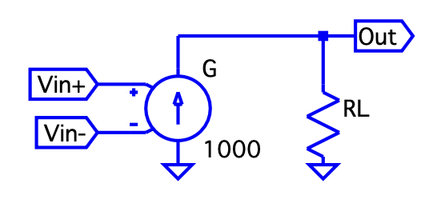
In the example shown above: - Gm represents the transconductance element of the OTA.
- RL is the load resistor converting current to voltage.
- The Vin+ and Vin- nodes are the positive and negative differential inputs, respectively.
The transconductance factor (gm) determines the gain of the OTA. In the simulation, G has a gain of 1000, providing an output current of
\[
I_{out} = G \cdot (V_{in+} - V_{in-}) \tag{22}
\]
The resistor RL converts this current into a voltage drop at the Out terminal.
9.3.2 Transistor-Level of the OTA
For transistor-level design and IC layout, a more accurate model of the OTA is implemented using MOSFETs. The differential pair forms the input stage, converting the input differential voltage into a differential current. Current mirrors and load transistors process this current, providing the desired output characteristics.
The following schematic shows a fully differential OTA structure commonly used in analog integrated circuits:
In this circuit: - The differential pair (Vin+ and Vin-) provides the input transconductance function.
- The current mirrors at the top and bottom bias and mirror the current for differential operation.
- The differential outputs Vout and Vinn allow for fully differential signal processing, improving noise immunity and power supply rejection.
The input differential pair operates in the saturation region, where the drain current
\[
I_D = \frac{1}{2} \mu C_{ox} \frac{W}{L} (V_{GS} - V_{TH})^2 \tag{23}
\]
is controlled by the gate-source voltage difference. The output current is mirrored and converted into a differential voltage across the load devices.
9.3.3 Comparison Between the Models
| Aspect | LTSpice Behavioral Model | Transistor-Level Implementation |
|---|---|---|
| Complexity | Simple and fast for simulation | Accurate but complex and slower simulation |
| Use Case | Circuit-level simulations, functional testing | Device-level design, IC schematic, performance validation |
| Nonlinear Effects | Ignored (ideal behavior) | Fully considered (real-world performance) |
| Saturation / Nonlinearity | Not modeled | Modeled according to device physics |
By combining both models in the design flow, system functionality can be verified early with the LTSpice behavioral model, while detailed electrical characteristics are analyzed with the transistor-level implementation. The following sections will represent th IC-schematic with xschem.
10 Basic OTA Sizing Strategy
Device sizing is a fundamental step in analog circuit design. Specifically, for Operational Transconductance Amplifiers (OTAs), proper sizing ensures the desired trade-off between gain, bandwidth, power consumption, and linearity. A structured approach to sizing guarantees that the transistors operate in their optimal region—typically strong inversion and saturation for analog applications.
This section presents a basic OTA sizing methodology based on the work of Prepl, whose notebook is publicly available at GitHub: analog-circuit-design.
The notebook demonstrates a Python-based framework for calculating initial transistor dimensions in a basic OTA. Below is an explanation of the key steps, equations, and important code snippets from the sizing method, along with visual aids to clarify the process.
The sizing workflow follows these general steps:
- Define technology and process parameters.
- Specify bias currents and overdrive voltages.
- Calculate width-to-length ratios (W/L) for each transistor.
- Determine transconductance, output resistance, and gain.
- Evaluate key performance metrics like slew rate and gain-bandwidth product.
At the beginning of the notebook, fundamental technology parameters are defined, including supply voltages, threshold voltages, mobility, and channel-length modulation factors for NMOS and PMOS transistors.
These parameters are critical for calculating transistor drain current in saturation:
\[ I_D = \frac{1}{2} \mu C_{ox} \frac{W}{L} (V_{GS} - V_{TH})^2 \tag{24} \]
The differential pair (M1 and M2) defines the input transconductance of the OTA. Sizing begins by selecting bias current and overdrive voltage (V\(_{OV}\)):
# Bias current for each NMOS transistor
ID1 = 100e-6 # [A]
# Overdrive voltage for M1 and M2
VOV1 = 0.2 # [V]
# Calculate W/L ratio for M1 and M2
WL1 = 2 * ID1 / (mu_n_Cox * VOV1**2)
print(f"W/L for M1 and M2: {WL1:.2f}")W/L for M1 and M2: 25.00In this example: - Bias current (ID1) is 100 µA per transistor. - Overdrive voltage (VOV1) is 0.2 V. - Calculated W/L ensures M1 and M2 operate in saturation with desired transconductance.
The tail current source (M5) provides total bias current to the differential pair:
# Tail current source sizing (M5)
ID5 = 200e-6 # Total bias current [A]
VOV5 = 0.2 # Overdrive voltage [V]
WL5 = 2 * ID5 / (mu_n_Cox * VOV5**2)
print(f"W/L for M5: {WL5:.2f}")W/L for M5: 50.00M5 carries the combined current of M1 and M2, typically twice ID1.
PMOS current mirrors (M3 and M4) act as active loads for the differential pair, impacting gain and output resistance:
# Load transistors sizing (M3 and M4)
ID3 = 100e-6 # [A]
VOV3 = 0.2 # [V]
WL3 = 2 * ID3 / (mu_p_Cox * VOV3**2)
print(f"W/L for M3 and M4: {WL3:.2f}")W/L for M3 and M4: 50.00Lowering overdrive voltage (V\(_{OV3}\)) increases output resistance, improving OTA voltage gain.
Once W/L ratios are calculated, device transconductance (g\(_m\)) and output resistance (r\(_o\)) are derived:
gm1 = mu_n_Cox * WL1 * VOV1 / 2
ro1 = 1 / (lambda_n * ID1)
ro3 = 1 / (lambda_p * ID3)
print(f"gm1: {gm1:.2e} S")
print(f"ro1: {ro1:.2e} Ω")
print(f"ro3: {ro3:.2e} Ω")gm1: 5.00e-04 S
ro1: 1.00e+05 Ω
ro3: 1.00e+05 ΩThe OTA’s DC gain is:
\[ A_v = g_{m1} \cdot (r_{o1} \parallel r_{o3}) \tag{25} \]
In Python:
Av = gm1 * (ro1 * ro3) / (ro1 + ro3)
print(f"Voltage gain A_v: {Av:.2f}")Voltage gain A_v: 25.00Evaluating Performance Metrics - Slew Rate and GBW:
Slew rate and gain-bandwidth product (GBW) predict OTA dynamic performance:
import numpy as np
CL = 1e-12 # Load capacitance [F]
# Slew rate calculation
SR = ID5 / CL
print(f"Slew Rate: {SR:.2e} V/s")
# Gain Bandwidth Product (GBW)
GBW = gm1 / (2 * np.pi * CL)
print(f"Gain Bandwidth Product: {GBW:.2e} Hz")Slew Rate: 2.00e+08 V/s
Gain Bandwidth Product: 7.96e+07 Hz- Slew Rate (SR): OTA’s ability to respond to large signals.
- Gain Bandwidth Product (GBW): Small-signal frequency response.
The presented methodology offers a systematic, reproducible approach to OTA design. Starting with hand calculations and validating through simulation helps designers optimize OTA performance while balancing speed, power, and gain. This lays groundwork for addressing noise, mismatch, and layout parasitics. Further information is publicly available at GitHub: analog-circuit-design.
11 Incremental Delta Sigma Modulators
As mentioned above Delta-Sigma Modulators play a huge role in electronics. In the following chapters we will take a look at our design steps, understand the fundamental building blocks of our Modulator and discuss the working principles.
While in continues time delta-sigma ADCs the analog input voltage is converted to a digital bitsteam continuesly, in incremental dsm’s this happens in small “blocks”. After each block the internal circuitry is resettet by a pulse and the conversion happens again. (Markus, Silva, and Temes 2004) In our circuits we will see the timing requirements of the two clock phases and the timing of the reset pulse which is applied to different stages like the integrating capacitor.
11.1 IIC-Tools and IHP-SG13G2 PDK
The IIC-OSIC-Tools Repo is a collection of different tools used for open source IC design, simulation and layout. This repository is forked from the origial Repo written by efabless. It contains xschem, klayout, the open pdk’s and ngspice which is used to simulate the drawn circuits in xschem (H. Pretl 2025).
The open source SG13G2 PDK from the Leibniz Institute for High Performance Electronics contains different building blocks like pmos and nmos field effect transistors as well as polysiicon resistors and MIM capacitors. The smallest structures that can be made are 130 nm small. This feature size is utilized in FETs and is the lower limit. In electronics design and engineering in general we have to be careful with designing circuits and systems at their limits. This feature size is called the lower limit for a reason and should only be utilized if necessary. (IHP 2025)
12 Ingegrated Circuit Design
12.1 Operational Amplifier
One of the most important components in analog electronics is the operational amplifier. The OpAmp can be used to amplifiy or attenuate signals, to decouple signals (unity-gain amplifier) in order not to load a signal sources, to build filters (biquad filters) and other signal processing circuits and to build circuits like integrators, comparators and summing amplifiers.
Operational Amplifiers basically amplify the voltage difference between their input terminals, the inverting and non-inverting input. This amplified differential voltage can then be further processed by the following circuitry. By applying some of the output signal back to the input more complex behaviour and also mathematical operations can be performed. By for example adding a feedback capacitor from the output to the inverting input togehter with a resistor at the inverting input an integrator can be realized. Depending on the type of feedback we get the following behaviour:
- Series-Shunt Feedback: Voltage Amplification
- Shunt-Shunt Feedback: Transimpedance Amplification
- Shunt-Series Feedback: Current Amplification
- Series-Series Feedback: Transconductance Amplification
The Amplification for these variants can be described by the following ratios:
- \(A_{va} = \frac{v_{out}}{v_{in}}\)
- \(A_{tia} = \frac{v_{out}}{i_{in}}\)
- \(A_{ca} = \frac{i_{out}}{i_{in}}\)
- \(A_{tca} = \frac{i_{out}}{v_{out}}\)
Capacitors in the feedback path or at the inputs create frequency dependant behaviour like filters. Without any feedback the OpAmp amplifies the differential input voltage with it’s open-loop gain \(A_{OL}\). The output voltage in this case can be calculated by the following formula:
\[ V_{out} = A_{OL} \cdot (V_{inv} - V_{ninv}) = A_{OL}V_{diff} \tag{26} \]
The open-loop configuration is mostly used in comparators, because here we usually want the output of the OpAmp to saturate to the supply voltage \(V_{DD}\) or negative supply \(V_{SS}\) ground potential. This happens because the smallest deviation at the input of the amplifier is in most cases enough to drive the output to the supply voltage or ground since in real operational amplifiers the open-loop gain is usually in the range of ten thousand to a few hundred thousands. In ideal OpAmps this value is infinite. Other metrics of the OpAmp are the input impedance \(z_{in}\), the output impedance \(z_{out}\), the input offset voltage \(v_{os}\) and input offset current which ultimately limit the performance. (Gift, Stephan J. G. and Maundy, Brent 2022)
The following table illustrates the metrics and gives examples for different technologies (added frequency ranges):
| Parameter | Bipolar | JFET | CMOS | Ideal OpAmp |
|---|---|---|---|---|
| \(z_{in}\) | $ 6 M $ | \(10^{13} \Omega\) | \(10^{12} \Omega\) | \(\infty\) |
| \(z_{out}\) | \(\leq 100 \Omega\) | \(\leq 100 \Omega\) | \(\leq 100 \Omega\) | \(0\) |
| \(A_{OL}\) | \(10^3 - 10^6\) | \(10^3 - 10^6\) | \(10^3 - 10^6\) | \(\infty\) |
| \(i_{off}\) | \(\pm 40 \mu A\) | \(\pm 1 pA\) | \(\leq 1 pA\) | \(0 A\) |
| \(v_{os}\) | \(\approx 25 \mu V\) | \(\approx 5 mV\) | \(\approx 1 - 50 \mu V\) | \(0\ V\) |
| \(f_{max}\) | \(1 - 500 MHz\) | \(100 kHz - 30 MHz\) | \(10 kHz - 100 MHz\) | \(\infty\) |
The components described at the beginning of this chapter are needed to implement the incremental delta-sigma converter and later the analog-to-digital converter. But not all of these components need the functionality modern OpAmps have. They for example don’t necessarily need current-limiting or rail-to-rail outputs, they don’t need very high bandwidths or other features.
Here in IC design and ultimately in chip level circuit design we need to carefully balance the trade-offs between power consumption, bandwidth and chip area. In the following chapter we will see that for this balance or rather operation type between power or area efficiency and frequency range we need to design our circuits for certain qualities. Here we want to note that every single square-milimeter of area on the die is costly and therefore careful design is required. To give an example the price per \(mm^2\) for the IHP-SG13G2 PDK we’re also using in this project is 7300€. (as of March 2025)(IHP GmbH 2025)
12.2 gm/ID - Methodology
One of the first questions we have to ask in IC design is how small or how large we can design the MOSFETs we’re using in the circuits. MOSFETs can be used in saturation mode or in the triode state (as well as in cut-off but this is not relevant for us). When the FET is in saturation the drain current \(I_{D}\) is controlled primarily by the gate-source voltage \(V_{GS}\). In this case the drain-source voltage has a smaller impact on the drain current. For the Transistor to work in saturation the drain-source terminals need to be driven with a voltage high enough so this “saturates” the FET and the highest drain-current is achieved.
On the other hand if the voltage applied across the drain-source contacts (on a NMOS for example) is relatively low (compared to the voltage for saturation), the FET will operate in the so called triode mode. In triode mode the drain-source voltage \(V_{DS}\) has a fundamentally larger impact on the drain current then in the saturation mode. (H. Pretl and Michael Koefinger 2025)
One Methodology to solve the question we asked at the beginning of this chapter is the \(\frac{gm}{I_{D}}\) methodology which we will introduce in a moment. There are basically three MOSFET characteristics directly describing the behaviour of it:
- \(\frac{g_m}{I_D}\) : Transconductance Efficiency
- \(\frac{\omega_{T}}{f_T}\) : Transit frequency
- \(\frac{g_m}{g_{ds}}\) : Intrinsic Gain
To understand the first characteristic for our FETs we have to take a look at the different operating points which depend on the applied voltages. Whenever we apply voltages to a FET in order to control a specific drain current \(I_{D}\), we can operate the FET in either weak inversion, strong inversion or moderate inversion. This behaviour is controlled by the Overdrive Voltage \(V_{OV}\) which is defined as the difference between the gate-source voltage and the threshold voltage. To note this small point the drain-current is controlled by the voltage between gate and source. Whenever an nmos is not being used as a low-side switch or amplifier or the pmos is being used as a low-side component problems can arise. Since we are using FETs in our switched capacitor integrator for example this is quite important.
\[ V_{OV} = V_{GS} - V_{TH} \tag{27} \]
We have to keep in mind that the threshold voltage isn’t a magical number that can be applied to every MOSFET, it rather depends on the geometry (with W and L for example) and other factors. For the example nmos given in the Analog Circuit Design IHP SG13G2 Devices Table by Professor Pretl, the threshold voltage is 0.5V. Therefore the overdrive voltage describes how “much” the gate-source voltage is above the threshold of the FET. Depending on this overdrive voltage the circuit/ic designer can apply different \(\frac{g_{M}}{I_{D}}\) values with the unit [\(\frac{1}{V}\)]. This unit is derived in the following way:
With \(g_{M}\) defined by:
\[ g_{M} = \frac{\partial I_D}{\partial V_{GS}} \tag{28} \]
and \(I_{D}\) having the unit Ampere [A] and the voltage \(V_{GS}\) we get:
\[ \frac{\frac{A}{V}}{A} = \frac{1}{V} \tag{29} \]
Before we continue with the \(\frac{g_{M}}{I_{D}}\) method we want to note that there also is the square-law model with which circuit designers can design MOSFET circuits. This model is usually applicable for PCB circuits and takes the situation into account where the MOSFET is driven in the stong inversion state. The square-law model is being applied assuming that the FET is operating in the “linear” or “triode” mode, however on nanometer scale FETs (down to 130 nm with the IHP-SG13G2 PDK) this model doesn’t give us precise solutions anymore. Many effects like parasitic capacitances alter the operational behaviour of the FET and lead to the square-law model deviating afar from the real-world behaviour in many situations (Alan Doolittle 2025).
The square-model drain-current behavior is being described by the following formula:
\[ I_{D} = \frac{Z \cdot \overline{\mu_n} \cdot C_{OX}}{L} [(V_{GS} - V_{T}) \cdot V_{DS} - \frac{V_{DS}^2}{2}] \tag{30} \]
with the two conditions:
\(0 \leq V_{DS} \leq V_{D_{SAT}}\) and \(V_{GS} \geq V_T\)
with following definitions:
- \(C_{OX} = \frac{\epsilon_{ox}}{x_{ox}}\)
- Z = MOSFET width
- L = MOSFET Channel length
- \(V_T\) = Threshold voltage
- \(\overline{\mu_n}\) = effective electron mobility
The threshold voltage is defined as:
\[ V_T = 2 \phi_F + \frac{\epsilon_s}{C_{OX}} \sqrt{\frac{2q N_{A}}{\epsilon} (2\phi_F)} \tag{31} \]
with:
\(\phi_F\) being the Fermi Potential (surface potential) defined by:
\[ \phi_F = \frac{kT}{q} \cdot ln (\frac{N_A}{n_i}) \tag{32} \]
with \(N_A\) being the acceptor doping concentration and \(n_i\) being the intrinsic carrier concentration. The term 2 \(\phi_F\) corresponds to the surface potential required to achieve strong inversion.
For more details the reader can consult (Alan Doolittle 2025),(Boris Murmann 2016) or (Silveira, Flandre, and Jespers 1996).
To illustrate the problems of the square-law model when designing MOSFET circuits at nanometer scale we will look at some graphs visualizing it’s limitation. First of all let’s look at the formulas for the square-law when we want to achieve more performance with our FETs:
Transconductance Efficiency: \[ \frac{g_m}{I_D} \cong \frac{2}{V_{OV}} \tag{33} \]
higher efficiencs here means more transconductance for the same drain current.
Transit Frequency:
\[ \frac{g_M}{C_{gg}} \cong \frac{3}{2}\frac{\mu V_{OV}}{L^2} \tag{34} \]
higher transit frequency for the same gate-capacitance.
Intrinsic Gain:
\[ \frac{g_m}{g_{ds}} \cong \frac{2}{\lambda V_{OV}} \tag{35} \]
high transconductance (at same drain-current \(I_D\)) without higher output conductance.
The square-law model completely fails in these cases when the MOSFET is not operation in strong inversion. In moderate and weak inversion we are forced to use a different mathmatical model , and the \(\frac{g_M}{I_D}\) method is a really good starting point (Ross Walker 2017).
The following figures will show the deviation between square-law and measurements as well as the \(\frac{g_M}{I_D}\) methodology:
So first of all when we use \(g_M\) and \(I_D\) we specify that for a specific drain-current we get a specific transconductance, for example with a \(\frac{g_M}{I_D}\) of 10 S/A we get 10 \(\mu\) S per 1 \(\mu\) A of bias current. And depending on how “much” the transistor is operating above it’s threshold voltage \(V_{th}\) (basically the Overdrive Voltage \(V_{OV}\) ) you get different inversion levels. From weak inveresions for low overdrive voltages to moderate inversion when operating at approximately \(V_{OV}\) = \(V_{th}\) to high inversion when \(V_{OV}\) > \(V_{th}\).
With the square-law value for transconductance efficiency we completely deviate with that approximation in weak and moderate inversion:
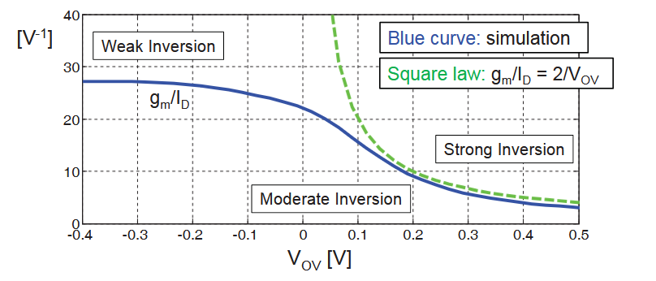
Another deviation from square-law to real MOSFET behaviour can be seen when we increase the gate-source voltage of the FET and measure the drain-current. According to square-law formual for the drain-current the current should just increase to the square with increasing gate-source voltage. But by taking the square of the drain-current and increasing \(V_{GS}\) we can see that the drain-current does not magically start flowing above the threshold-voltage and also the behaviour is also not linear (quadratically when not taking the square of the current):

This simulation is done for a n-channel MOSFET with a drain-source voltage of 1.8 V and a size of L = 180 nm and W = 5 \(\mu\)m.
The drain-current behaviour at sub-threshold gate voltages is completely inaccurate for the square-law too, and the following graph visualizes the limitation of the square-law at this point again:
These three examples show that the approach using square-law to size MOSFETs is not sufficient when the transistor is operating in weak or moderate inversion and when driving the FET (nmos for example) with a low gate-source (or overdrive-) voltage. To cite Mr. Walker on this topic: “This means that the square law equation (which assumes 100% drift current) does not work unless the gate overdrive is several \(\frac{kT}{q}\), (Ross Walker 2017)”.
To conclude this, we can keep in mind that there is no simple formula that can describe the drain-current behaviour in all situations and be universally used. So using the \(\frac{g_m}{I_D}\) methodology is the way to go in our project.
Now with that out of the way we can design our circuits using the \(\frac{g_m}{I_D}\) methodology. The main properties of our MOSFETs we can manipulate in xschem are the lenght of the channel L, the width W and the bias current \(I_D\). The common way to use this method is to first characterize nmos and pmos field effect transistors and then use this data to design the circuits. In the chapter “MOSFET characterization Testbench” chapter in (H. Pretl and Michael Koefinger 2025) we can see how the values for the \(\frac{g_m}{I_D}\) methodology are being simulated for later use.
The lenght of the MOSFET channel also has a large influence on it’s frequency characteristic as it can be seen in this simulation:
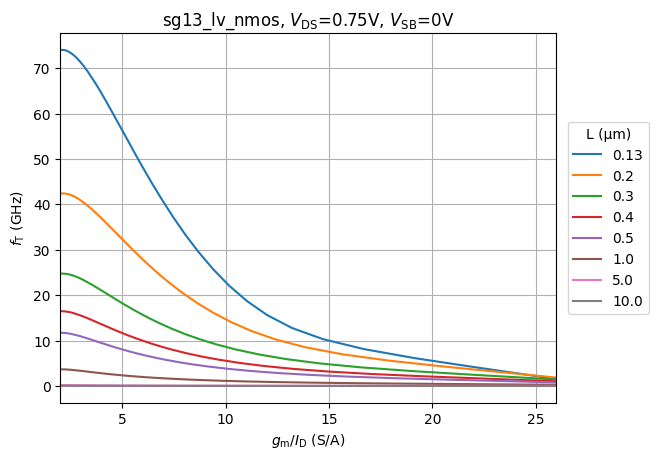
The operating areas of interest for us are the saturation region (when using the FET as an amplifier for example) and the region when the FET is being used to “just” work as a switch. With setting \(V_{DS}\) to \(\frac{V_{DD}}{2}\) we keep the FET in saturation. Reminding ourselves again that with larger \(g_M\) we have more “gain” and with a smaller \(I_D\) we have higher efficiency we try to hit the sweetspot between size (as every square milimeter has it’s cost) and current consumption (if we have wearable battery powered devices for example). Keeping also in mind that temperature has a large effect we cannot use arbitratily large drain currents.
Following plot visualizes the dependancy of \(\frac{g_M}{I_D}\) to the gate-source voltage and shows the transit frequency behaviour too:

12.3 Subcomponents/-systems of the incremental Delta-Sigma Modulator
Our incremental \(\Delta \Sigma\)-Modulator is made up of different clocked non-clocked components. To have a working converter at the end we first build the circuit according to circuits from Professor Pretl and also made use of several circuits which were proved functional from different IEEE publications and other references from literature. Another important source of knowledge were the lecture slides of Professor Boris Murmann from the University of Hawai’i at Mānoa from the lecture: EE 628 - Analysis and Design of Integrated Circuits, which can be found here: (Boris Murmann 2024).
12.3.1 Voltage Reference
The first circuit we want to take a look at is the voltage reference in our delta-sigma modulator. The comparator in the delta-sigma converter compares the output voltage of the integrator to the reference voltage and outputs a high- or low-signal (depending on the circuit for example 1.2 V or 0 V). So to set a voltage to which the output of the integrator can be compared against we utilize a bandgap-reference to generate our output voltage. In the case where the reference voltage is not ground this circuit will be used.
Another reason to use a voltage-reference is to create the biasing-currents used to drive the 5T-OTA and other circuits where we need a current to shift the voltages (and currents) in a way to the MOSFETs are at their biasing-point (20 \(\mu\) A for example at the OTA).
The bandgap-reference utilizes the base-emitter voltage \(V_{BE}\) of bipolar junction transistors. In the IHP-SG13G2 pdk we can implement the needed pnp-layers and therefore use the badgap-voltage \(V_{g0}\) of silicon which is 1.205 V at 0 K. Even tho, as can be seen from the bandgap-voltage \(V_{g0}\), this voltage is temperature dependant, by using two BJTs with different current densities we can generate a refernce voltage that is indepentant of the temperature. The full equasion for the \(V_{ref}\) is:
\[ V_{ref} = V_{g0} (1-\frac{T}{T_0}) + V_{BE0}(\frac{T}{T_0}) + \frac{kT}{q} ln(\frac{J1}{J2}) \tag{36} \]
with J1 and J2 being the differnet emitter current densities.
The improvised BJTs don’t have great specs regarding speed and other performance metrics, but this implementation can reach accuracies of \(\pm\) 1 to 3 % (H. Pretl and Michael Koefinger 2025).
With the two Resistors R1 and R2 in this circuit we were able to change the reference voltage at the output. The output voltage \(V_{ref}\) can be calculated by the following formula:
\[ V_{ref} = V_{BE} + \frac{R2}{R1} \frac{kT}{q} ln(m) \tag{37} \]
Our implementation in xschem looks like this:
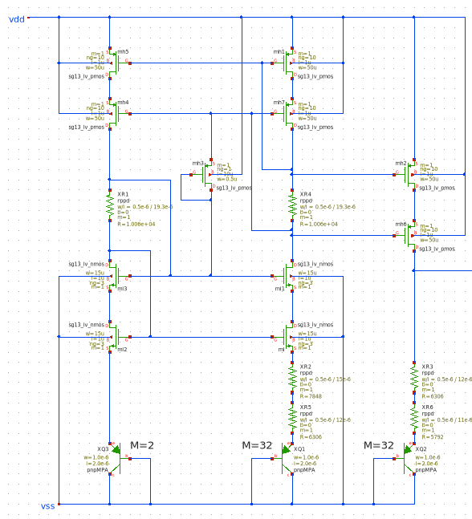
Using the formula we changed the resistors R1 and R2 to get a reference voltage of 729 mV. This voltage was used to see how much we can change the reference voltage. In the application we use the half of the supply voltage for the comparator reference and according voltages for the biasing currents for the MOSFET circuits like the OTA.
Following picture shows the output voltage over time:
Even tho the temperature dependencies canceled out each other in the formuals above, second-order effects still lead to some voltage variation over temperature (H. Pretl and Michael Koefinger 2025). The next picture graph shows the temperature sensitivity of our voltage-reference:
12.3.2 Voltage Controlled Ring Oscillator
Another important circuit is the Oscillator which is ultimately used to create the system clock. The system clock can be transferred to all circuit elements which need to switch like the switched-capacitor integrator or reset-circuitry to start a new integration cycle. This clock generator ensures together with the clock-splitter that all circuits are synchronized to each other (keep in mind that clock shall never overlap when there are FETs connected in series, or otherwise there can be dead-shorts from \(V_{DD}\) to ground).
The basic building blocks of our ring oscillator are the inverters working as delay stages (plays an important role for the frequency). Each stage has a specific delay and in total multiple stages cascaded need to have a total phase shift of 2 \(\pi\) or 360°. They also need to have a voltage gain of one at the oscillation frequency. With each stage having a gain of:
\[ A(j\omega) \tag{38} \]
we get the gain of each stage:
\[ A_1(j\omega) = A_2(j\omega) = A_3(j\omega) = \frac{-g_MR}{1 + j\omega RC} \tag{39} \]
Since we have an odd number of stages (N) every stage of the inverters needs to provide \(\frac{\pi}{N}\) phase shift so that with the dc-inversion at the end of the ring (adds another phase-shift of \(\pi\) or 180°) we can fulfill the Barkhausen criterion and our circuit will oscillate:
\[ |A_1(j\omega) \cdot A_2(j\omega) \cdot A_3(j\omega)| = 1 \tag{40} \]
The R’s and C’s are coming from the input capacitances of the FETs and are modeled in the formula as being the loads to the transconductances of each stage.
With each stage having a phase-shift of:
\[ \angle A(j\omega) = \theta = arctan (\omega RC) = \frac{2 k \pi}{N} \tag{41} \]
we get an oscillation frequency of:
\[ \omega_0 = \frac{tan (\theta)}{RC} \tag{42} \]
or with the time-delay \(t_d\) of each stage:
\[ f = \frac{1}{2Nt_d} \tag{43} \]
Since in our application we want to have a period of 4.5 \(\mu s\) we need a oscillation frequency of
\[ f_{osc} = \frac{1}{4.5 \mu s} = 222.2222 kHz \]
and we have three stages, we need to have a delay of:
\[ t_d = \frac{1}{2Nf_{osc}} = \frac{1}{2\cdot3\cdot222.22 kHz} = 75 \mu s \]
In our implementation of the ring oscillator we are intentionally using the voltage controlled (VCO) oscillator. The inverter stages are biased by the current sources which are fed by the MOSFETs M11, M13, M15 and M16. Here we are limiting the biasing current and we can control this current through the voltage applied to the FET M17. This voltage then controls the current and ultimately the delay of each inverter which in turn allows us to change the frequency of our oscillator. The following pictures illustrate our oscillator circuit and additional circuitry:
In the middle part of the circuit we can see the three inverter stages. These are supplied by the four MOSFETs at the edges with current which is in turn controlled by the voltage applied to the nmos on the left-hand side (G. Jovanovic and Stamenkovic 2010). After implementing multiple different oscillator circuits this was the one that finally oscillated:
We can see in this plot that after around 10 \(\mu\)s the circuit starts to oscillate. This is a sinusodial oscillation and since we need a rectangular clock signal we implemented a schmitt-trigger circuit after the oscillator in order to get a PWM signal with a duty cycle of 0.5 and a frequency of 222 kHz. The Schmitt-Trigger circuit looks like this (Filanovsky and Baltes 2004):
Whenever the input signal of the schmitt-trigger crosses a set limit the output is pulled to a high state. And if the input signal falls below a certain threshold the output signal goes low again. This transfer function is visualizes in this graph:
Unfortunately the output of our schmitt-trigger stayed low at all times so we assume that the setpoints for the change of the states from high to low and from low to high were not set correctly.
To see if the clock signal from the VCO at least has the right frequency we plotted a reference clock-signal and compared both of them:
As can be seen from this plot there’s only a slight difference in frequency and this can be easily compensated by the control-voltage of the VCO.
12.3.3 Clock Generator/Splitter with delay circuit
Now assuming we have a clean clocking signal we need to split this clock into two non-overlapping clock signals so the switched-capacitor integrator stage and the other circuit elements can be clocked. Our clock splitter circuit is a circuit based on the given splitter in the lecture number 13 from (Boris Murmann 2024) the lectures of Professor Murmann. This in turn is a circuit designed in the Ph. D. Thesis of Dr. Andrew Abo and utilizes inverters and nand-gates to generate four output signals from the one input clock. These four clock-signals come in pairs of two, so two clock signals which are inverted to each other and then another two signals which have a slightly larger delay (or dead-time) in between them ensuring no overlapping. We implemented this circuit not only using logic gates like the mentioned inverters and nand-gates but also transistorized this circuit.
Each inverter in our Clock-Splitter looks like this:
And we also implemented nand gates with nmos and pmos FETs and added an output driving stage for each nand gate:
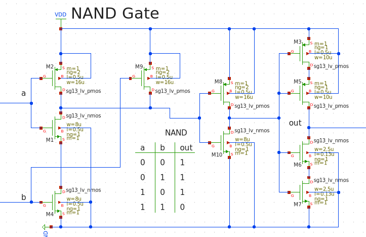
Before continueing with the circuit design we simulated the nand gate to ensure that it operated as we intended. For that we applied clocked signals and checked whether the gate output was low whenever both signal input signals were high and vice versa or not:
From these simulations we can see that the nand gate is working.
Now let’s continue with the complete circuit:
Starting from this we implemented the inverters and nand gates with discrete MOSFETs and designed a testbench in xschem:
Below you can see the setup for the simulation. The input is fed by a clock signal with a period time of 4.5 \(\mu\) s:
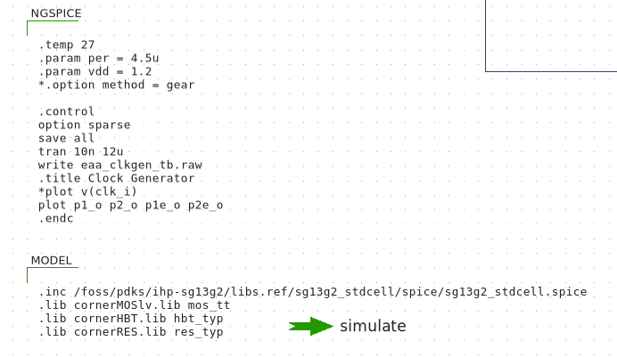
Now let’s look at the outputs:
We can see that the clock-signal edges have some overshoot and ringing. This is a point at which the clock splitter circuit should be further optimized.
12.3.4 Inverter as Integrator
While we could use an operational transconductance amplifier at the heart of our SC-Integrator we implemented an inverter as the core of the integrator. Inverters can be used since the main goal of the integrator stage is to transfer the charge from the sample capacitor \(C_s\) and integrate it with the help of the integration capacitor \(C_i\). For this operation the inverter is enough and we utilize it here. Another drawback with using an OTA or an OpAmp for the integrator is the additional power consumption and area. Additional informations regarding the inverter as an integrator can be found here: (Chae et al. 2011).
Our implementation in xschem looks like this:
In this Figure we can see three capacitors. Usually we have two capacitors in the SC-Integrator but in this schematic we have a third one. While we know the input capacitor being the sampling capacitor \(C_S\) and the integrating capacitor \(C_I\) the third capacitor after \(C_S\) is the holding capacitor \(C_H\) which holds the charge from the input capacitor for further processing. Also the switches aren’t yet transistorized. But for now lets look at the outputs of this circuit and the clock signals:
We can see that the voltage after the inverter working as an integrator rises. With the constant input voltage at the input this means that our integrator is indeed working. But the other signals are not correct yet since for example q would need to be a PCM signal.
The clocking signals are as shown:
The values for the mentioned three capacitors are as follows:
- \(C_S\) = 1 pF
- \(C_H\) = 1 pF
- \(C_I\) = 2 pF
12.3.5 Clocked Comparator
Another important subcircuit is the clocked comparator. The output of our integrator is fed into the comparator and being compared to eiter half of the supply voltage \(V_{DD}\) or to 0 V. After the comparator the voltage signal is now digital (since the comparator only puts our high or low) and this signal is further processed for the feedback with the 1-Bit DAC and the digital filter and decimator.
For our implementation of the comparator and latch we used the StrongARM latch which was utilized in the StrongARM microprocessor from Digital Equipment Corporation. The fundamental circuit was originally introduced by Kobayashi et al. from Toshiba (Razavi 2015). This circuit consists of a differential pair, two cross-coupled pairs and four precharge switches. By applying the clock signal to the comparator we can compare the inputs of the comparator and provide a clocked output as opposed to “classical” comparators which output their states continuesly.
After the comparison stage we latch the output and store it until in the next clock cycle the comparison happens again. This is the latching circuit after the comparator:
As can be seen after the latching circuit we added an output driving stage again to ensure that our comparator can drive loads accordingly. We verified the functioality by applying signals to the input and plotting the output. Our comparator works as intended:
First lets see the input signal circuitry. We had to connect a resistor to the two positive input voltage sources because we wanted to skip one pulse at which then the voltage pulse at the negative input would be higher than the voltage of the positive input:
We observe that whenever the negative input of the comparator is higher than the positive input the output goes low. Otherwise the output signal is high. This verifies the functionality of our StrongArm comparator and latch.
12.3.6 1-Bit DAC
The last circuitry we want to take a look at is the 1-Bit DAC in the feedback path. This DAC is basically implemented as an inverter. Whenever the output of the comparator is a logical one the output of the DAC is a logical low or 0V. By connecting the inverter between \(V_{DD}\), GND and the input signal we can fulfill this functionality of it. A transmission gate is added to the input to switch the signal. This consists of two MOSFETs connected as complementary switch, a cmos. That circuitry looks like this:
12.4 First Order Delta-Sigma Modulator
Our methodology to implement the first-order delta-sigma modulator was to verifiy the functionality of each subcircuit and then implement this in a complete circuit. We first started by substituting the switches of the SC-Integrator by pmos- and nmos-FETs and then continued with the integrator which was implemented by an inverter and the integrating capacitor. Then we added the comparator and latching circuit after the integrator. After this was implemented we added our bandgap voltage-reference and the clock splitter. We then connected the four phases of our clock splitter to the FETs of the SC-Integrator as well as to the clocked-comparator. Unfortunately the first order idsm does not work yet and we suspect that there is a problem with the Sample- and Hold-Stage or with the SC-Integrator.
The following plot shows the different signals of the first order idsm:
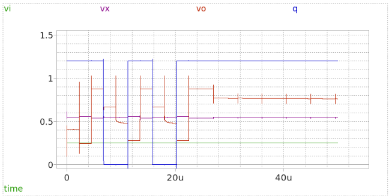
12.5 Second Order Delta-Sigma Modulator
The second-order idsm has two integrators back to back as well as the feedback signal fed into the summing nodes twice. We would have implemented the second-order idsm once the first order circuit worked. As mentioned in the lecture slides by Professor Meiners it’s not so smart to try and find the error in the finalized circuit. We rather did what he suggested and verified the functionality of most of the circuits.
This picture is from the first order idsm but is should give the reader the understanding why errors are harder to fix when the circuit is combined and then harder to fix:
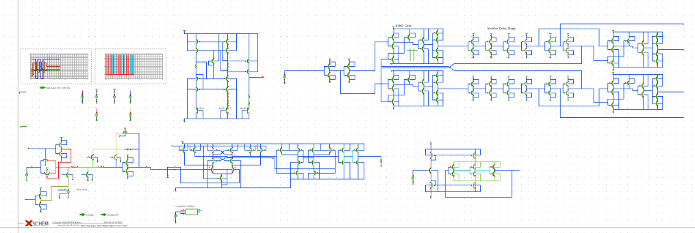
13 Testbed Design
13.1 PCB Design for a Board to Evaluate the ADC ADS1115
This Board was designed by us and aims to build a solid base to reduce parasitic effects like stray inductance etc. in comparison to a breadboard prototype and allow the user to take more accurate and reproducible measurements of the ADC. On this playform the ADS1115 as well as our IC can be tested when the IC is produced and then packaged.
13.2 Design Steps
First we fixed the design requirements and added following components into the list of parts on our board:
| Component | Product Number |
|---|---|
| ADC | ADS1115 |
| Accelerometer | ADXL335 |
| LDO | AZ1117CH-3.3TRG1 |
| Main Connector | USB-C |
| MCU | ESP8266-12E/ESP-12E |
| Signal Connectors | SMA Connector |
| USB-to-UART Converter | CP2102-GM |
| Power In Connector | Male Pin Headers |
13.3 Additional Features
We also added the following features to this board. Even tho this is a relatively simple board we want to have this features anyway:
- Reverse polarity protection at the power input
- ESD protection on important nodes
- EMI protection
- LEDs to show the status of the LDO and debug the MCU
- Tight coupling to ground of signals (using a four layer PCB instead of a two layer board)
- Clean and uninterupted reference plane
- Four layer board from EU
- LEDs on UART lines between USB-to-UART Converter and ESP8266
13.4 Block Diagram
Here we have a visualisation of the board in the form of a block diagram. This allows the user and designers to quickly grasp the concept and order of the board and understand the system. Also this is usually thie first step in designing electronic systems as well as software since it gives a good overview.
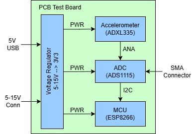
13.5 Schematic
The schematic consists of four pages in total and is in an hierachical order. On the title page we can find informations of the board and a block diagram of the schematic. In the input and voltage regulator section there is the USB-C connector and the male pinheader. Here we can also find the reverse polarity protection in the form of a schottky diode and TVS diodes for ESD protection. Schottky diodes have a smaller forward voltage drop than silicon diodes and were choosen because of this. Further the 3.3V LDO and LEDs are implemented here. We used net labels to clarify names of nets in the PCB editor. Ports are being used to connect signals and power rails across the project between multiple schematic pages. The USB connector has two 5.1k\(\Omega\) to negotiate 5V and up to 1.5A from the USB supply device.

13.6 Input, Power Regulation and USB-C Connector
The schematic in the diagram illustrates the power management and input/output configurations of a circuit design in detail. The “USB-C Power and Programming” section includes circuit components that provide power supply and data communication through a USB-C connection. The “Voltage Supply Input” section ensures the regulation and protection of the input voltage, incorporating components for overcurrent and overvoltage protection. The “3.3V Voltage Regulator” section features a regulator circuit that steps down the 5V input voltage to 3.3V, along with filtering capacitors. Finally, the “Power Connections” section displays the connections of various voltage levels to other circuit modules. This design aims to deliver a compact and protected power management solution.

13.7 ESP8266 and USB-to-UART
The ESP8266 Page contains the microcontroller and USB-to-UART converter IC in order to communicate with the MCU over the USB port and a PC. This part was mostly taken from the ESP8266 reference design schematic.

13.8 ADC, Accelerometer and SMA Signal Input Connectors
The ADC page contains the ADC ADS1115IDGST itself as well as four SMA connectors to connect to an external signal generator for example. There is also the accelerometer ADXL335BCPZ which can be utilized to aquire signals for the ADC. The connections can be configured by solder jumpers. This gives us the ability to quickly solder and desolder connections without using additional jumpers or 0 \(\Omega\) resistors for example. The SMA connector inputs are also protected by TVS diodes against ESD. This ensures reliable operation of the ADC and other ICs.

13.9 PCB Design
After designing the complete circuit in the schematic editor we checked for errors and annotated the schematics. Annotion means assigning each part an individual number to be able to seperate them. Then we did coarse placement of the components and then adjusted the footprints and did the fine placement.
It’s important to place decoupling capacitors close to the respective ICs so they have small parasitic inductance and therefore better power delivery when digital ICs are switching and also analog ICs are pulling higher currents. Additional capacitors reduce voltage drop whenever a device or IC is pulling current from the supply traces. Also we made sure to have a transmission via to all signal vias whenever we are changing signal layer so the signal is always referenced to ground and electric and magnetic fields are contained in a small area. This also helps with crosstalk and noise reduction.
Around the board we added stitching vias to stitch the ground layers together and created a faraday cage in order to stop incoming em-waves from disturbing our analog and digital signals. Traces can and will act like antennas and we need to be careful with this. The distance of the vias around the edges of the board can be calculated with the following formula:
\[ L = \frac{1}{20} \cdot \frac{c}{\sqrt{\epsilon_{r_eff}} \cdot f_{max}} \tag{44} \]
where
- c = speed of light (\(3\cdot 10^{8}\) m/s)
- \(\epsilon_{r\_eff}\) = effective dielectric constant of the PCB (for FR4 = 4.6)
- \(f_{max}\) = highest frequency of the RF circuit operation (Hz)
with \(f_{max}\) being the highest analog or digital frequency. The highest digital frequency is contained in the rising and falling edges and can therefore be much higher than the digital signal frequency itself.
The following pictures show the PCB:

This is the Top and Bottom Layers in the 2D view in Altium Designer

This picture shows the top copper layer

The next two pictures show the voltage drop on the 3.3V rails when the ESP and both ICs pull their respective currents. THe lowest voltage here is 3.29V. This can be important whenever high precision is needed for the ADCs since they compare the voltage on the inputs to the ADC reference voltage.


In this last picture we can see the 3D rendered view from Altium Designer of our board.